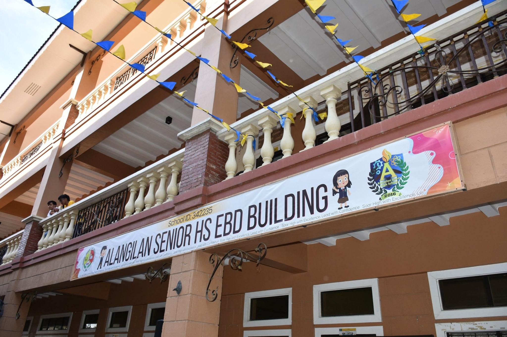
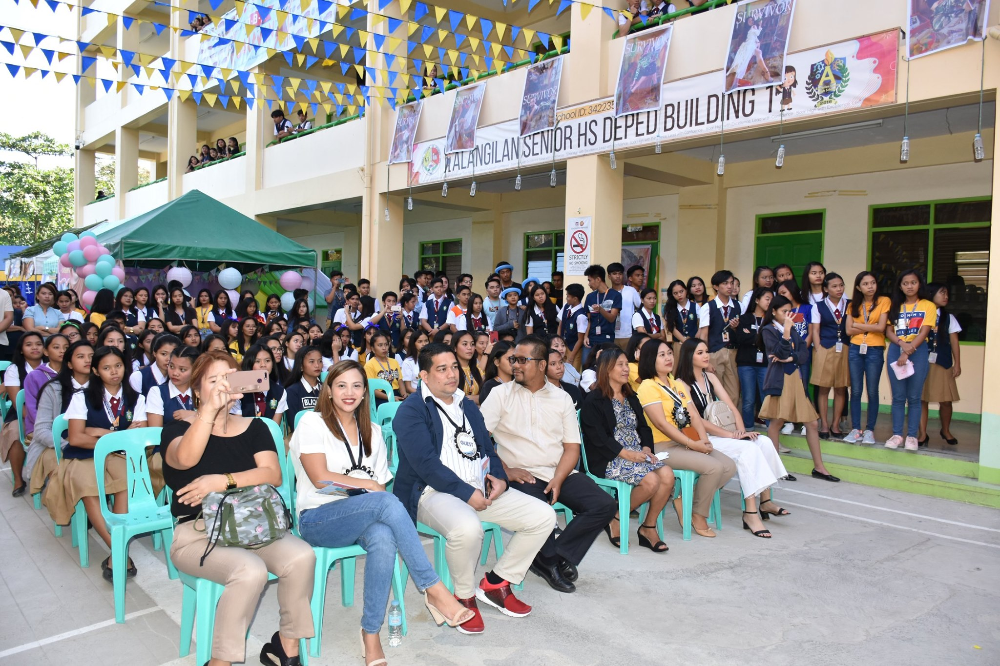
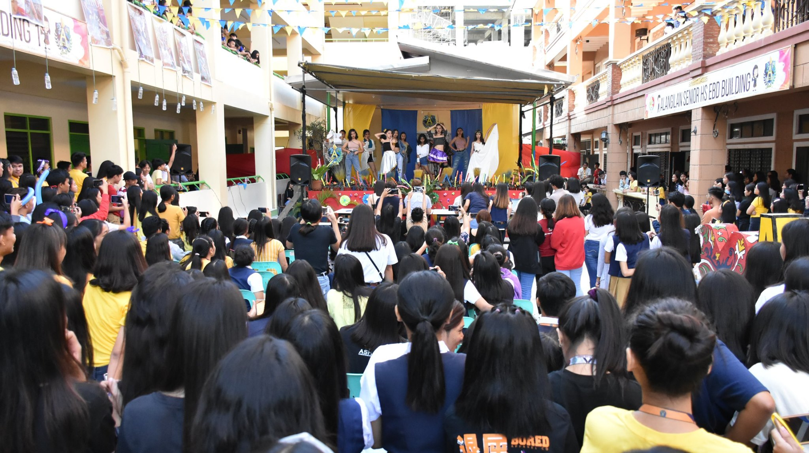

<ion-content>

<ion-slides #slide (ionSlideDidLoad)='slidesDidLoad(sliders) 'pager='true' [options]='slide0pts'>
  
  <ion-slide>
    
  </ion-slide>

  <ion-slide>
    
  </ion-slide>

  <ion-slide>
    
  </ion-slide>
</ion-slides>

  <ion-card>
    <ion-card-header>
      
      <ion-card-title>Alangilan Senior High School</ion-card-title>
    </ion-card-header>
  
    <ion-card-content>
      Alangilan Senior High School was founded last June 13, 2016. 
      It is one of the two stand alone senior
    </ion-card-content>
  </ion-card>

  

  <ion-tabs>
    <ion-tab-bar slot="bottom">
      <ion-tab-button href="profile">
        <ion-icon name="person"></ion-icon>
        <ion-label>Profile</ion-label>
      </ion-tab-button>

      <ion-tab-button href="qrcode">
        <ion-icon name="qr-code"></ion-icon>
        <ion-label>Qr Code</ion-label>
      </ion-tab-button>

      <ion-tab-button href="activity">
        <ion-icon name="calendar"></ion-icon>
        <ion-label>Activity</ion-label>
      </ion-tab-button>

      <ion-tab-button (click)="logout()">
        <ion-icon name="calendar"></ion-icon>
        <ion-label>Logout</ion-label>
      </ion-tab-button>
    </ion-tab-bar>
  </ion-tabs>
</ion-content>

